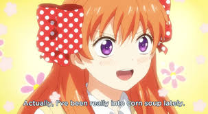

Corn Soup
Back to Hub

- Corn
- Salt
- Chicken Stock
- Celery
- Onion
- Garlic
- Red Wine Vinegar
- Carrots
- Cook down the onions, carrrrrrrrrrrrrots and chickenstock blahblabhblhb ill finish this later
- Destroy that evil stone that makes you procrastinate
- Cook the rest of the corn soup